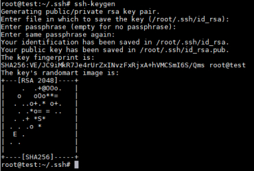
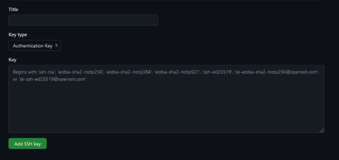
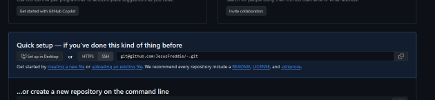
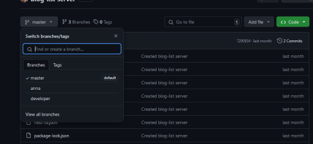

Git
Git - это программа для удобной разработки, позволяющая управлять версиями проекта, отслеживать изменения и загружать их на удаленные сервера.
GitHub, GitLab - это лишь хранилищя, некий сервер, куда мы можем загружать наши проекты.
В нашем проекте мы будем пользоваться, поэтому этот сайт будет для вас шпаргалкой по командам.
Настройка
Скачиваем Git с оф. сайта.
После чего открываем терминал и настраиваем пользователя командой
Именно под такими параметрами будут отображаться ваши изменения
Теперь нам надо привязаться ваш компьютер к GitHub
Покажу на примере Windows. Если вы пользователь Linux, то у вас должно хватить ума сделать это самостоятельно
Со всем соглашайся и устанавливай пароль для твоего ключа ( или не устанавливай, тогда просто везде тыкай Enter )
В итоге ты должен получить такой результат
Переходим в директорию C:\users\”ваш пользователь”\.ssh\
Открываем файл id_(цифры).pub через VS Code и копируем все что там есть.
После чего заходим в настройки аккаунта в GItHub и выбираем пункт “SSH and GPG keys”

Нажимаем на New SSH key
Вводим название вашего ключа (какое хотите) И записываем ключ в поле key. Нажимаем на Add SSH key. Если вы все сделали правильно, то ключ должен записаться
Настройка Git закончена
Репозиторий
Вы можете создать новый репозиторий, или склонировать репозиторий с сервера.
Для того, чтобы превратить вашу папку в репозиторий Git нужно выполнить эту команду
Но пока что это только репозиторий на вашем локальном компьютере, чтобы привязать его к репозиторию на GitHub нужно его создать и скопировать SSH адрес
После чего выполнить следующую команду
В URL вы подставляете сслыку на репозиторий на GitHub
Теперь репозиторий на вашем устройстве и на внешнем сервере связаны.
Для того, чтобы склонировать репозиторий с сервера, вам нужно выпольнить команду:
Часто в командах дальше вы будете использовать ключевое слово origin. Origin означает ссылку на текущий репозиторий, в котором вы находитесь
Загрузка файлов
И так, репозиторий мы настроили. Теперь можно приступать к самому интересному.
Когда вы вносите изменения в проект, программа git видит эти изменения и записывает 2 состояния. Изменения До и После.
Чтобы посмотреть состояние файлов, которые вы изменили, достаточно ввести команду
Вам выдаст все файлы, которые были изменины. Файлы красного цвета означают, что в них есть изменения, но они не добавленны для дальнейшей работы. Фалы зеленого цвета означают, что изменения были добавлены. Но сейчас зеленых файлов у вас не будет.
Эта команда сохраняет фалы, которые вы выберите. В данном случае точка на конце означает, что я хочу сохранить все фалы, но никто вам не мешает указвать и конкретное название файлов.
Далее необходимо создать Коммит. Коммти, это совокупность изменений в вашем проекте. Их может быть сколько угодно, по ним можно спокойно переключаться и работать над разными версиями кода. Но пока что, все изменения все еще локальны, они не загружаются на сервер.
Выполнив эту команду мы все наши добавленные изменения через git add компануем в единую, новую версию нашего проекта. В нашем коммите должно быть описание наших изменений. Обычно, коммитят небольшие участки, относящиеся к одной конкретной новой фичи.
Для просмотра всех коммитов можно использовать команду
А для переключение между ними команду
Хэш будет отображаться в информации о коммите.
Разработав наш гениальный проект, мы хотим поделиться с миром нашим творением, ведь все, что мы делали ранее, выполнялось локально на нашем устройстве, GitHub понятия не имеет о наших изменениях.
Чтобы закинуть наши изменения на GitHub нужно использовать комманду
Что такое ветка мы посмотрим дальше, пока что напишем туда master. Это базовать, основная ветка, создающаяся автоматически.
Теперь можно проверять ваш репозиторий на GitHub. Там должны появиться ваши изменения.
Обновление
Чтобы обновить ветку до последней версии ( если кто то внес изменения и вы хотите, чтобы они были и у вас )
Ветки
При разработке ПО мы может столкнуться с тем, что нам нужно потдерживать уже опубликованное приложение и исправлять баги, и паралельно вести разработку новой версии приложения. Чтобы такое сделать, нам нужны ветки.
Ветка, это отдельная копия проекта, позваляющая вам работать над проектом, добавлять новые фичи, не затрагивая основную версию проекта.
Ветка, это отдельная копия проекта, позваляющая вам работать над проектом, добавлять новые фичи, не затрагивая основную версию проекта.
В GitHub ветки проекта отображаются вот тут
Для просмотра всех веток есть комана
Для переключение между ветками
Для создания ветки
Для добавления ветки на сервер